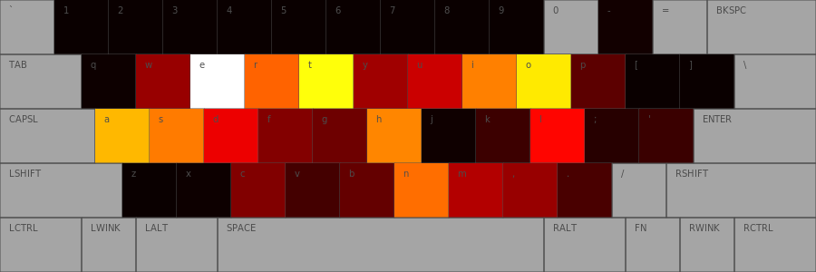

Dvorak and typing efficiency
After reading some criticisms of the Dvorak keyboard layout, I decided to try and calculate the relative finger distance travelled when using both layouts. The suggestion that using the Sholes (QWERTY) keyboard layout will, in general use cases, require more finger travel doesn't seem to be disputed, but the Wiki article makes it sound so:
Dvorak proponents claim the Dvorak layout uses less finger motion, increases typing rate, and reduces errors compared to the standard QWERTY keyboard.
I switched to the Dvorak layout because my hands were starting to hurt after long bouts of typing. For me, the Dvorak downsides are the necessity of switching layouts when using other computers, and the placement of the shortcut keys become inconvenient (particularly ctrl + c and ctrl + v - both of these require two hands to execute). The upsides are that I no longer get sore hands, and my typing speed has increased.
To calculate relative distances, I used the SVG on the Wikipedia site and measure distance between keys in pixels. SVG files are XML files, so I pulled the key border coordinates with this line of bash:
cat svgs/KB_Blank.svg | grep "d=\"M" | grep -v "\." | sed "s/d=\"M\s//g" | sed "s/,/ /g" | sed "s/L\s//g" | sed "s/\sz\s\"//g"Calculating the distance between keys is then a matter of calculating Euclidean distance between the pixel coordinates of the centre of these boxes. Calculating the relative distance travelled in typing, say, the works of Shakespeare, is largely a matter of calculating the distance between the relevant home key (assuming the typist is using the most common touch-typing pattern) and then multiplying it by two for the return journey.
The complication comes from using the same finger to type consecutive letters, such as rt on the Sholes layout. Calculating the return distance from r and t overstates the distance, because our fingers naturally move from f to r to t to f, without returning to f in between. A solution is to add the return distance only when another finger is being used, otherwise add the distance from the previous key.
I didn't include distances for keys that don't change location - shift, enter, space etc. Also, I have used str.lower() on each character, which doesn't change non-alphanumeric characters (e.g. the double quotation mark). Therefore, these aren't included in the distance and will probably cause some bias, but it's hard to say for which layout.
According to my Python program, typing the entire works of Shakespeare with the Sholes layout requires 1.78 times the finger travel of the Dvorak layout. Typing the most common 1/3 million words with the Sholes layout requires 1.55 times the finger travel of the Dvorak layout.
Because I have the coordinates of the key boxes in pixels, it's easy to draw heat maps of finger activity on keys with pyCairo. Here's the heat map of the entire works of Shakespeare with the Sholes layout, with lighter colours signifying more activity:

And the respective activity with Dvorak:
I also wrote a very primitive genetic-esque algorithm looking for improvements on a base layout. I'll play with it some more another time but I've included in the zip.
You can download a zip file or tarball of the project. I got my text files for testing from Peter Norvig's website.
There's no question using Dvorak requires less finger movement in general use cases. The other benefits of the layout are contestable, but I can say in my case they are generally true.